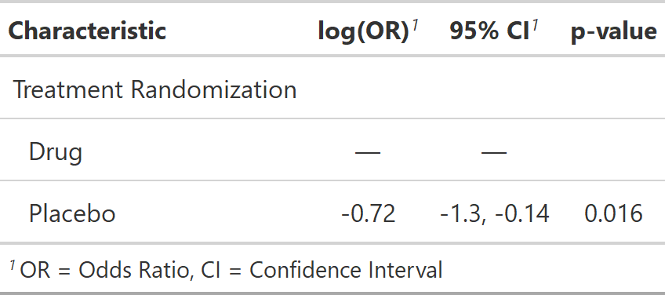

| add_nevent.tbl_regression {gtsummary} | R Documentation |
This function adds a column of the number of events to tables created with tbl_regression. Supported model types include GLMs with binomial distribution family (e.g. stats::glm, lme4::glmer, and geepack::geeglm) and Cox Proportion Hazards regression models (survival::coxph).
The number of events is added to the internal .$table_body tibble,
and not printed in the default output table (similar to N). The number
of events is accessible via the inline_text function for printing in a report.
## S3 method for class 'tbl_regression' add_nevent(x, ...)
x |
|
... |
Not used |
A tbl_regression object

Daniel D. Sjoberg
Other tbl_regression tools:
add_global_p.tbl_regression(),
bold_italicize_labels_levels,
bold_p.tbl_regression(),
bold_p.tbl_stack(),
combine_terms(),
inline_text.tbl_regression(),
modify_header(),
sort_p.tbl_regression(),
tbl_merge(),
tbl_regression(),
tbl_stack()
tbl_reg_nevent_ex <- glm(response ~ trt, trial, family = binomial) %>% tbl_regression() %>% add_nevent()